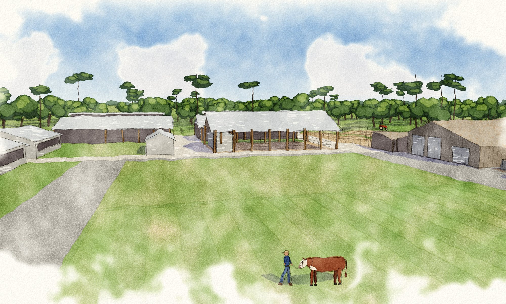
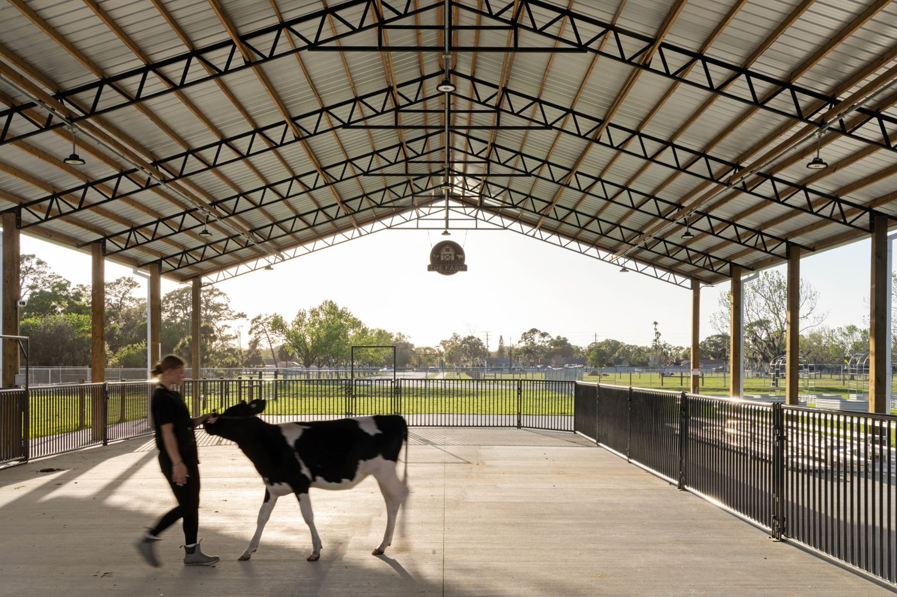
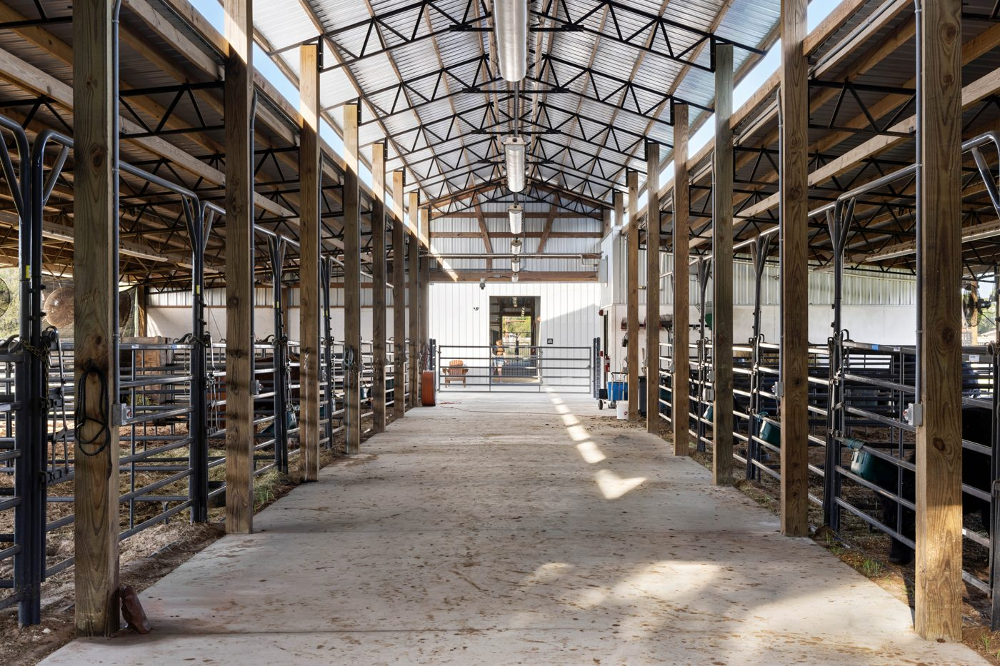
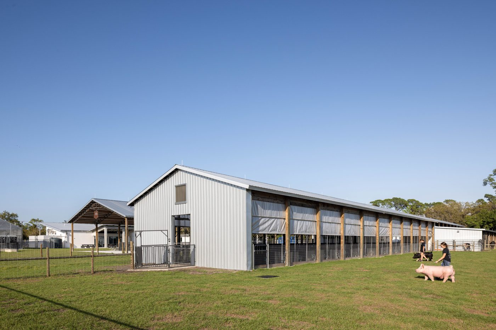
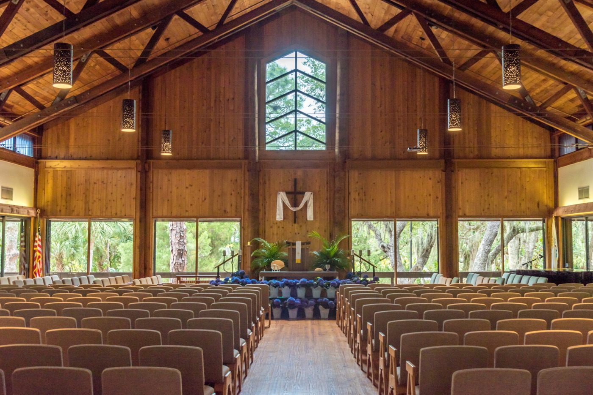

At its best, the site becomes a complete agriculture education center: a working barnyard, the historic house renewed, pasture in rotation, and room to teach, gather, and show.

The barnyard at Level 3



Comparative images. McIntosh Middle School Ag Center, Seibert Architects; photos by Ryan Gamma Photography. Siesta Key Chapel; photo courtesy of Siesta Key Chapel.